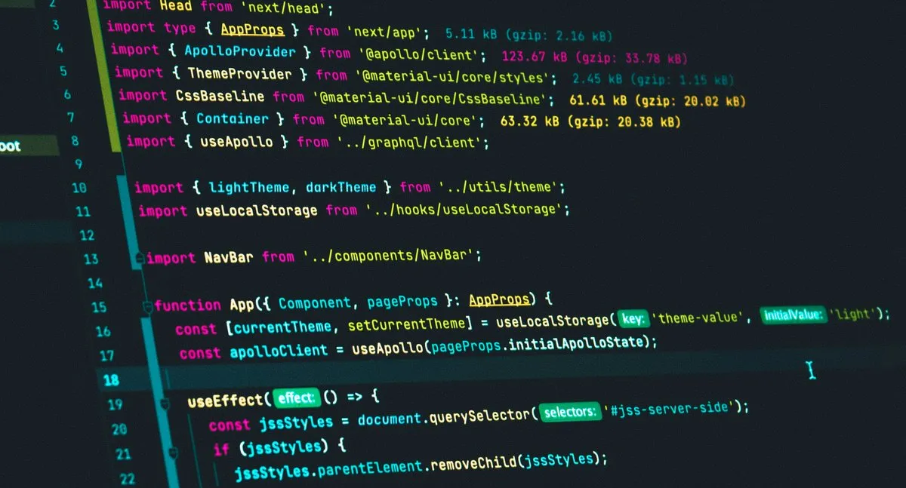

Vodič za učenje NodeJS javascript platforme
Šta je NodeJS?
NodeJS je platforma kreirana od Ryana Dahla 2009-te godine koja nam omoćuje da pišemo backend(server) kod u javascriptu.
Kada je Rhyan izbacio prvu verziju nodejs-a 2009-te javascript zajednica je dobila mogućnost da piše sav kod na obe strane,i na klijentu i na serveru koristeći istu sintaksu javascripta.
Nodejs radi na principu ukljucivanja modula koji su nam potrebni da odradimo neku server side logiku za našu web aplikaciju,a module povlačimo i instaliramo iz "NPM" ili ti node package manager-a i sve je kompletno "open source" ili ti besplatno.
Ovde ćemo se fokusirati na rad nodejs-a u web aplikacijama mada ga možete koristiti i za ostale vidove programiranja,dakle nodejs kroz svoj "express.js" module pravi radno okruženje za web development pa nije neispravno reći da su to nodejs ili express web aplikacije.
Sam express je okvir koji nam daje mogućnost da naš sajt ili stranica rade na webu.
O ovoj platformi postoje desetine hiljada video-a i knjiga,a originalnu dokumentaciju za Nodejs pogledajte ovde.
Ova platforma nam dolazi sa mnoštvom takozvanih "builtin" ili na našem jeziku ugradjenih modula u samu platformu koje po potrebi možemo koristiti.
Kao što već napomenuh nodejs nije napravljen samo za javascript programiranje na webu vec ima mnogo šire mogućnosti zahvaljujući Ryan-u i njegovom radu.
Reference za učenje Nodejs(Express.js)
Kao što već rekoh pored gorenavedene dokumentacije zapravo svaki modul koji nam treba i uključujemo ga u naš web sajt poseduje svoju sopstvenu dokumentaciju,tako da je nodejs cela jedna programerska galaksija.
Ko želi da uči nodejs treba prvo da startuje sa laganijim stvarima sa express.js modulom kao što su pravljenje servera i slično.
Express.js dokumentaciju možete pogledati na Express.js docs stranici.
Izvora za učenje ima puno u zavisnosti od toga šta želite da postignete sa vašom serverskom logikom.
Recimo na youtube-u imate mnogo nodejs express tutorijala,e sad koliko je baš pouzdano to šta kodira svaki dev širom sveta i izbaci na youtube ostavljam vama da procenite. .
Pronašao sam jednu sjajnu plejlistu gde se predaje kako napraviti kompletan web chat sa razmenom poruka trenutno i sa svim logikama za privatno i javno ćaskanje.
Tu plejlistu sa 90 video-a a svaki u trajanju od 20-75 minuta mozete pronaći na Full chat app plejlisti na youtube-u.
Sve je sjajno uredjeno,npr Part 1 pa Part 2 itd da možete pratiti celokupnu izradu.
Generalno chatovi su jako dobri za vežbanje javascripta jer u njima ima stotine logika postignutih javascriptom tako da sam celu listu prošao i mnogo naučio i utvrdio moj već prilično dobar javascript.
Cela ta web aplikacija radi na bazi "socket.io" modula i razmenjuje poruke trenutno i jako je dobro proći komletnu izradu od "Part 1" dela do kraja gde imate i na kraju upravljanje korisnicima napravljeno sa "jsonwebtoken" modulom.
Hvala na poseti i želim vam srećno učenje.